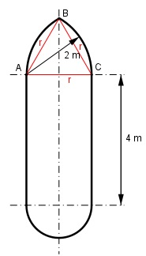

Aufgabe 162 Wie groß ist die Fläche A?

Das Dreieck ACB ist gleichseitig und somit der sechste Teil eines regelmäßigen Sechsecks. Seine Innenwinkel betragen 60°. A = Rechteck + Halbkreis + Kreissektor ACB + + Kreissegment CB Rechteck = 2 m + 4 m = 8 m2 12 m2 * π Halbkreis = ------------- = 1,57 m2 2 b * r Kreissektor ACB = ------- 2 2 * π * 2 m b = ------------- = 2,1 m 6 2,1 m * 2 m Kreissektor ACB = ------------- = 2,1 m2 2 Kreissegment = Kreissektor ACB – Dreieck ACB g * h Dreieck ACB = ------- 2 Höhe im Dreieck: Satz von Pythagoras im Dreieck ACB: r r r2 = h2 + (---)2 | -(---)2 2 2 r2 r2 - ---- = h2 4 3 --- r2 = h2 4 r 2 m h = --- * √3 = ----- * 1,73 = 1,73 m 2 2 2 m * 1,73 m Dreieck ACB = --------------- = 1,73 m2 2 Kreissegment BC = 2,1 m2 - 1,73 m2 = 0,37 m2 A = 8 m2 + 1,57 m2 + 2,1 m2 + 0,37 m2 = 12 m2